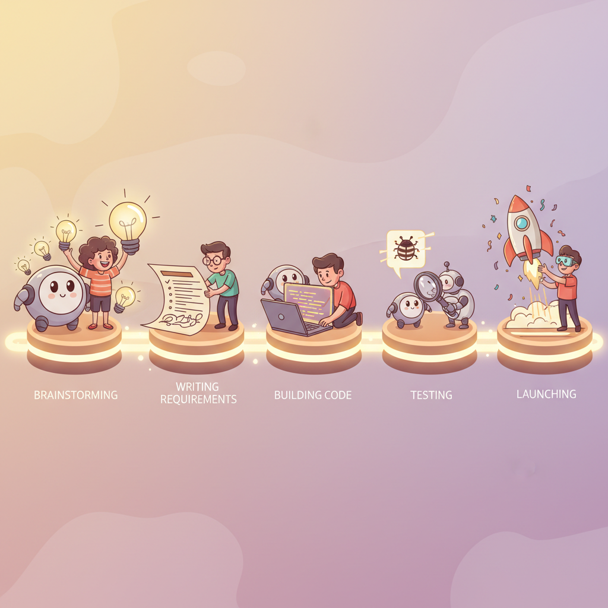

"I asked the LLM to critique my product plan. It found three fatal flaws, two brilliant pivots, and one typo I had been ignoring for six weeks."
Compass The Strategic Navigator

Prerequisites
This section builds on the entire Chapter 38 arc: the AI Role Canvas (Section 36.2), the Intent + Evidence Bundle (Section 36.3), the Prototype Loop (Section 36.4), and the Launch Readiness Checklist (Section 36.5). Familiarity with prompt engineering (Chapter 11) and evaluation (Chapter 29) will help you get the most from the capstone lab.
AI copilots are not just coding assistants. Throughout this book, we have explored LLMs as engines for text generation, retrieval, reasoning, and action. In this final section, we flip the lens: instead of building AI products for users, we use AI as a thinking partner while building the product itself. From stress-testing hypotheses during ideation, to drafting acceptance criteria during requirements, to meta-prompting during prompt design, LLMs can accelerate and sharpen every stage of the product lifecycle. We close with a capstone lab that ties together every framework from this chapter into a single, end-to-end exercise.
1. The Copilot Lifecycle Map Basic
Most teams discover AI-assisted development through code completion tools. That is only one slice of the value. The table below maps five product development stages to the copilot capabilities that accelerate each one.
| Stage | Copilot Use | Example Prompt Pattern |
|---|---|---|
| Idea Framing | Stress-test hypotheses, generate counter-arguments, brainstorm edge cases | "Act as a skeptical product reviewer. List five reasons this idea will fail." |
| Requirements | Draft user stories, acceptance criteria, threat models | "Given this feature description, write acceptance criteria in Given/When/Then format." |
| Prototyping | AI coding assistants, synthetic test data generation | "Generate 50 realistic customer support tickets covering edge cases for a returns policy." |
| Prompt Steering | Meta-prompting: use one LLM to critique and refine another's prompts | "Critique this system prompt for ambiguity, missing constraints, and potential jailbreaks." |
| Evaluation | Summarize eval results, suggest next experiments, identify failure clusters | "Here are 200 eval results. Group the failures by root cause and suggest fixes." |
The highest-leverage copilot use is often the earliest stage. A well-tested hypothesis saves weeks of building the wrong thing. Using an LLM to generate counter-arguments during idea framing costs pennies and can prevent months of wasted engineering effort. The AI Role Canvas from Section 36.2 provides the structured format for this kind of early-stage stress testing.
2. Idea Framing: The LLM as Devil's Advocate Intermediate
Before writing a single line of code, you can use an LLM to pressure-test your product hypothesis. The technique is straightforward: describe your idea, then ask the model to argue against it from multiple perspectives.
The following function sends a product hypothesis to an LLM and collects structured criticism.
# Stress-test a product hypothesis using an LLM as devil's advocate
import openai
client = openai.OpenAI()
def stress_test_hypothesis(hypothesis: str, perspectives: int = 5) -> str:
"""Ask the LLM to critique a product hypothesis from multiple angles."""
system_prompt = (
"You are a rigorous product strategy advisor. "
"Given a product hypothesis, provide structured criticism:\n"
"1. List the strongest counter-arguments.\n"
"2. Identify hidden assumptions the founder may not realize they are making.\n"
"3. Name the riskiest dependency (technical, market, or regulatory).\n"
"4. Suggest one pivot that preserves the core insight but avoids the biggest risk."
)
response = client.chat.completions.create(
model="gpt-4o",
messages=[
{"role": "system", "content": system_prompt},
{"role": "user", "content": f"Hypothesis: {hypothesis}"},
],
temperature=0.7,
max_tokens=800,
)
return response.choices[0].message.content
# Example usage
idea = (
"Small law firms will pay $200/month for an AI assistant that drafts "
"client intake summaries from recorded phone calls."
)
critique = stress_test_hypothesis(idea)
print(critique)3. Requirements: Generating Structured Artifacts Intermediate
Once the hypothesis survives scrutiny, the next stage is translating it into actionable requirements. LLMs excel at expanding a brief feature description into user stories, acceptance criteria, and lightweight threat models. The key is providing a clear template so the output is structured and reviewable rather than freeform prose.
This prompt template generates acceptance criteria in Given/When/Then format from a feature description.
# Generate acceptance criteria from a feature description
ACCEPTANCE_CRITERIA_PROMPT = """\
You are a senior product manager writing acceptance criteria.
Feature: {feature_description}
For each user story, produce acceptance criteria in this format:
- GIVEN [precondition]
- WHEN [action]
- THEN [expected outcome]
Also list:
- Two edge cases that are easy to overlook.
- One potential abuse scenario and its mitigation.
"""
def generate_acceptance_criteria(feature: str) -> str:
"""Expand a feature description into structured acceptance criteria."""
response = client.chat.completions.create(
model="gpt-4o",
messages=[
{"role": "user", "content": ACCEPTANCE_CRITERIA_PROMPT.format(
feature_description=feature
)},
],
temperature=0.4,
max_tokens=1000,
)
return response.choices[0].message.content
# Example: generate criteria for the intake-summary feature
criteria = generate_acceptance_criteria(
"AI assistant transcribes a recorded client phone call and produces "
"a structured intake summary with client name, issue category, "
"key dates, and recommended next steps."
)
print(criteria)Append a second pass to your requirements workflow: feed the generated acceptance criteria back into the LLM with the prompt "Identify three security or privacy threats in this feature and suggest mitigations." For the law firm intake assistant, the model might flag: (1) recordings stored without client consent, violating attorney-client privilege rules; (2) transcription errors in proper nouns leading to wrong-client linkage; (3) the summary leaking details from one client's call into another's context window. Each of these maps directly to a testable requirement. This complements the Intent + Evidence Bundle from Section 36.3, where evidence includes not just positive signals but identified risks.
4. Prompt Steering: Meta-Prompting Advanced
One of the most powerful (and underused) copilot patterns is meta-prompting: using one LLM call to critique and improve the prompt you plan to use in another LLM call. This creates a feedback loop at the prompt design level, catching ambiguities, missing constraints, and potential failure modes before they reach users. The prompt engineering techniques from Chapter 11 provide the foundation; meta-prompting adds a reflective layer on top.
The following function sends a draft prompt through a critique-and-revise cycle.
# Meta-prompting: use an LLM to critique and improve a draft prompt
META_CRITIC_SYSTEM = """\
You are a prompt engineering expert. Given a draft system prompt,
provide a structured critique:
1. AMBIGUITIES: phrases a model might misinterpret.
2. MISSING CONSTRAINTS: important boundaries not stated.
3. JAILBREAK SURFACE: ways a user could bypass the instructions.
4. REVISED PROMPT: an improved version addressing the issues above.
"""
def meta_prompt_critique(draft_prompt: str) -> str:
"""Critique a draft system prompt and return an improved version."""
response = client.chat.completions.create(
model="gpt-4o",
messages=[
{"role": "system", "content": META_CRITIC_SYSTEM},
{"role": "user", "content": f"Draft prompt:\n\n{draft_prompt}"},
],
temperature=0.5,
max_tokens=1200,
)
return response.choices[0].message.content
# Example: critique a draft system prompt for the intake assistant
draft = (
"You are a legal intake assistant. Summarize the client's phone call. "
"Include the client name, issue type, and next steps."
)
improved = meta_prompt_critique(draft)
print(improved)Anthropic's own prompt engineering team uses meta-prompting internally. When developing system prompts for Claude, engineers routinely ask Claude itself to find weaknesses in draft instructions. The practice is sometimes called "prompt red-teaming," and it mirrors the adversarial evaluation patterns from Chapter 29. The model is surprisingly good at finding its own escape hatches.
5. Evidence-Based Iteration: Summarizing Eval Results Intermediate
After prototyping and running your evaluation suite, you may have hundreds or thousands of scored results. Manually triaging failures is tedious and error-prone. An LLM copilot can cluster failures by root cause, suggest the highest-impact fix, and propose the next experiment to run.
The following function feeds a batch of evaluation failures to an LLM for root-cause clustering.
# Summarize evaluation failures and suggest next experiments
import json
def summarize_eval_failures(failures: list[dict], top_k: int = 5) -> str:
"""Cluster eval failures by root cause and suggest fixes.
Each failure dict should have 'input', 'expected', 'actual', and 'score'.
"""
# Truncate to avoid exceeding context limits
sample = failures[:100]
payload = json.dumps(sample, indent=2)
response = client.chat.completions.create(
model="gpt-4o",
messages=[
{"role": "system", "content": (
"You are an evaluation analyst. Given a list of failed test cases, "
"group them into root-cause clusters. For each cluster:\n"
"1. Name the failure pattern.\n"
"2. Count how many cases belong to it.\n"
"3. Suggest a concrete fix (prompt change, guardrail, or data addition).\n"
"4. Rank clusters by impact (most failures first).\n"
f"Return the top {top_k} clusters."
)},
{"role": "user", "content": f"Failed test cases:\n\n{payload}"},
],
temperature=0.3,
max_tokens=1500,
)
return response.choices[0].message.content
# Example usage with synthetic failure data
sample_failures = [
{"input": "Call about car accident", "expected": "Personal Injury",
"actual": "Property Damage", "score": 0.0},
{"input": "Llamada sobre accidente", "expected": "Personal Injury",
"actual": "I don't understand", "score": 0.0},
# ... imagine 198 more entries
]
analysis = summarize_eval_failures(sample_failures)
print(analysis)- LLMs accelerate every product stage, not just coding. Hypothesis stress-testing, requirements drafting, prompt critique, and evaluation analysis all benefit from copilot workflows.
- Meta-prompting (using one LLM call to critique another's prompt) is one of the highest-leverage techniques for prompt quality iteration.
- Copilot output is always a draft. The verification discipline from Section 37.2 applies equally to requirements, threat models, and eval summaries.
What's Next
In Section 38.3, we explore how AI reduces vendor lock-in while creating new forms of cognitive dependency, and how to build a multi-provider strategy that keeps your options open.